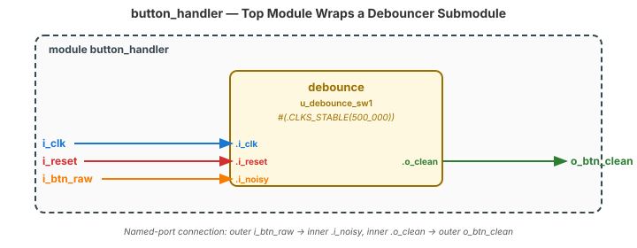
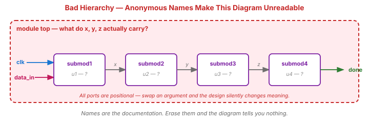

Video 1 of 4 · ~10 minutes
Dr. Mike Borowczak · Electrical & Computer Engineering · CECS · UCF
A modern SoC has millions of gates arranged in a hierarchy 10+ levels deep. The top-level module of an Apple M-series chip probably fits on one page — it instantiates ~50 major blocks (CPU clusters, GPU, memory controller, NPUs), each a module, each decomposed into sub-modules, all the way down to leaf cells. Without hierarchy, no one person could understand a chip.
Topic 5 button pipeline: sync + debounce + edge-detect are three modules. Topic 7 traffic light used a sub-module timer. Topic 11 UART top has TX + RX + control as sub-modules. Topic 12 SPI is the same. The pattern scales from this week to the capstone.
counter c1 (clk, rst, en, count); — positional connection. Shorter, right?
counter u_cnt0 (.i_clk(clk), .i_reset(rst), .i_enable(en), .o_count(count)); — named port connection. If someone adds a port, swaps an order, or adds an input, positional connections silently break. Named connections fail at compile — fast, loud, fixable.
.port(signal).
// Top-level — wraps debounce as sub-module
module button_handler (
input wire i_clk, i_reset, i_btn_raw,
output wire o_btn_clean
);
// Instantiate by name
debounce #(.CLKS_STABLE(500_000)) u_debounce_sw1 (
.i_clk (i_clk),
.i_reset (i_reset),
.i_noisy (i_btn_raw),
.o_clean (o_btn_clean)
);
endmodule
u_debounce_sw1, not u1. (2) Parameter override #(.CLKS_STABLE(500_000)). (3) Named ports — .i_clk(i_clk). Each colored signal in the code maps to the same-colored arrow in the RTL.
| Concept | Prefix / Pattern | Example |
|---|---|---|
| Module input | i_ | i_clk, i_data |
| Module output | o_ | o_sum, o_valid |
| Module inout (rare) | io_ | io_bus |
| Internal register | r_ | r_state, r_counter |
| Internal wire | w_ | w_sum, w_carry |
| Module instance | u_ | u_debounce_sw1 |
| Compile-time constant | ALL_CAPS | CLKS_STABLE, WIDTH |
u_uart_rx.r_state, you instantly know: this is a register inside the uart_rx instance. The conventions aren't arbitrary — they're the lowest-cost way to make signals navigable.
module top (input wire clk,
input wire data_in,
output wire done);
wire x, y, z;
submod1 u1 (clk, data_in, x);
submod2 u2 (x, y);
submod3 u3 (clk, y, z);
submod4 u4 (z, done);
endmodule
List the code-review issues.
u1, u2, ...) — unreadable in waveforms.x, y, z) — can't tell what they carry.submod1) — file-naming bug..ports, meaningful instances (u_decoder, u_filter), wires named for their purpose (w_decoded_byte).
~5 minutes — sync + debounce + edge = button_handler
▸ COMMANDS
cd lecture_examples/week2_day08/d08_s1_ex1/
ls *.v # 4 module files + tb
cat day08_ex01_button_handler.v # top-level composition
make sim
make stat # total for full hierarchy
make prog▸ EXPECTED STDOUT
sync_2ff.v
debounce.v
edge_detect.v
day08_ex01_button_handler.v
tb_button_handler.v
PASS: sync works
PASS: bounces filtered
PASS: 1-cycle release pulse
PASS: 1-cycle press pulse
=== 8 passed, 0 failed ===
Per-instance breakdown:
u_sync: 2 SB_DFF
u_debounce: ~30 cells
u_edge: 1 SB_DFF + 1 LUT$ yosys -p "read_verilog *.v; hierarchy -top button_handler; synth_ice40; stat"
=== button_handler === ← top level
Number of cells: 42
$scopeinfo 3 ← hierarchy markers (retained)
=== debounce === ← sub-module, preserved
Number of cells: 37
SB_CARRY 18
SB_DFFESR 20
...flatten to the Yosys script — useful for critical-path analysis, costly to debug.
Ask AI: “I have sync_2ff.v, debounce.v, and edge_detect.v. Write a top-level button_handler module that instantiates all three in the correct order, using named port connections and descriptive instance names.”
TASK
AI composes 3 modules into a top.
BEFORE
Predict: wire chains from sync output → debounce input → edge input.
AFTER
Strong AI uses named ports + u_ instances. Weak AI uses positional.
TAKEAWAY
AI handles composition well if you give it the sub-module port lists.
① Hierarchy manages complexity. Real designs are 10+ levels deep.
② Always use named port connections (.port(signal)), never positional.
③ Naming conventions: i_/o_/r_/w_/u_. Descriptive instance names.
④ Yosys preserves hierarchy by default. Flatten only for optimization.
🔗 Transfer
Video 2 of 4 · ~9 minutes
▸ WHY THIS MATTERS NEXT
You now instantiate modules. Next: how to make the same module serve different roles through parameters. One counter module that's 8-bit in one place, 16-bit in another, with any CLKS_STABLE value. This is IP reuse — and it's how industry scales.